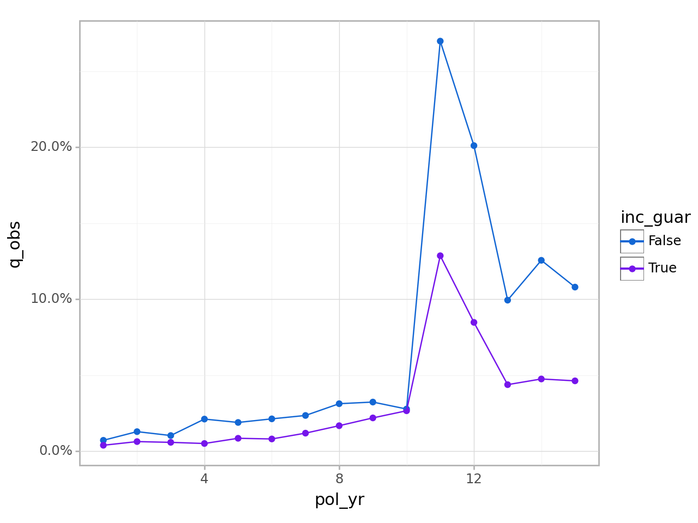
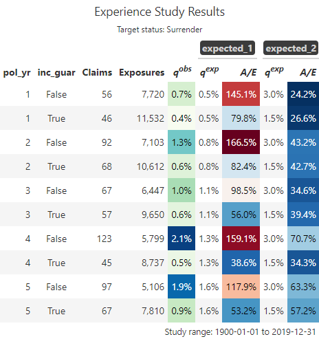

This article is based on creating a termination study using sample data that comes with the actxps package. For information on transaction studies, see Transactions.
Simulated data set
The actxps package includes a Polars data frame containing simulated census data for a theoretical deferred annuity product with an optional guaranteed income rider. The grain of this data is one row per policy.
import actxps as xpimport numpy as npimport polars as plcensus_dat = xp.load_census_dat()census_dat
shape: (20_000, 11)
pol_num
status
issue_date
inc_guar
qual
age
product
gender
wd_age
premium
term_date
i64
cat
date
bool
bool
i64
cat
cat
i64
f64
date
1
"Active"
2014-12-17
true
false
56
"b"
"F"
77
370.0
null
2
"Surrender"
2007-09-24
false
false
71
"a"
"F"
71
708.0
2019-03-08
3
"Active"
2012-10-06
false
true
62
"b"
"F"
63
466.0
null
4
"Surrender"
2005-06-27
true
true
62
"c"
"M"
62
485.0
2018-11-29
5
"Active"
2019-11-22
false
false
62
"c"
"F"
67
978.0
null
…
…
…
…
…
…
…
…
…
…
…
19996
"Active"
2014-08-11
true
true
55
"b"
"F"
75
3551.0
null
19997
"Surrender"
2006-11-20
false
false
68
"c"
"F"
77
336.0
2017-07-09
19998
"Surrender"
2017-02-20
true
false
68
"c"
"F"
68
1222.0
2018-08-03
19999
"Active"
2015-04-11
false
true
67
"a"
"M"
78
2138.0
null
20000
"Active"
2009-04-29
true
true
72
"c"
"M"
72
5751.0
null
Note
census_dat is a Polars data frame. Actxps functions accept both Polars and Pandas data frames. For speed and efficiency reasons, Polars is used internally for all data wrangling, so if a Pandas data frame is passed to an actxps function it will be converted to Polars. To convert a Polars data frame to Pandas the method DataFrame.to_pandas() is available.
The data includes 3 policy statuses: Active, Death, and Surrender.
Let’s assume we’re interested in calculating the probability of surrender over one policy year. We cannot simply calculate the proportion of policies in a surrendered status as this does not represent an annualized surrender rate.
As a default, ExposedDF() calculates exposures by policy year. This can also be accomplished with the class method ExposedDF.expose_py(). Other implementations of ExposedDF() include:
ExposedDF.expose_cy = exposures by calendar year
ExposedDF.expose_cq = exposures by calendar quarter
ExposedDF.expose_cm = exposures by calendar month
ExposedDF.expose_cw = exposures by calendar week
ExposedDF.expose_pq = exposures by policy quarter
ExposedDF.expose_pm = exposures by policy month
ExposedDF.expose_pw = exposures by policy week
See Exposures for further details on exposure calculations.
Experience study summary function
The exp_stats() method creates a summary of observed experience data. The output of this function is an ExpStats object.
ExposedDF objects contain a group_by() method that is used to specify grouping variables for downstream methods like exp_stats(). Below, the data is grouped by policy year (pol_yr) and an indicator for the presence of a guaranteed income rider (inc_guar). After exp_stats() is called, the resulting output contains one record for each unique group.
To derive actual-to-expected rates, first attach one or more columns of expected termination rates to the exposure data. Then, pass these column names to the expected argument of exp_stats().
ExpStats objects have plot() and table() methods that create visualizations and summary tables. See Data visualizations for full details on these functions.
exp_res.plot()

<Figure Size: (640 x 480)>
# first 10 rows showed for brevityexp_res.table()

summary()
Calling the summary() method on an ExpStats object re-summarizes experience results. This also produces an ExpStats object.